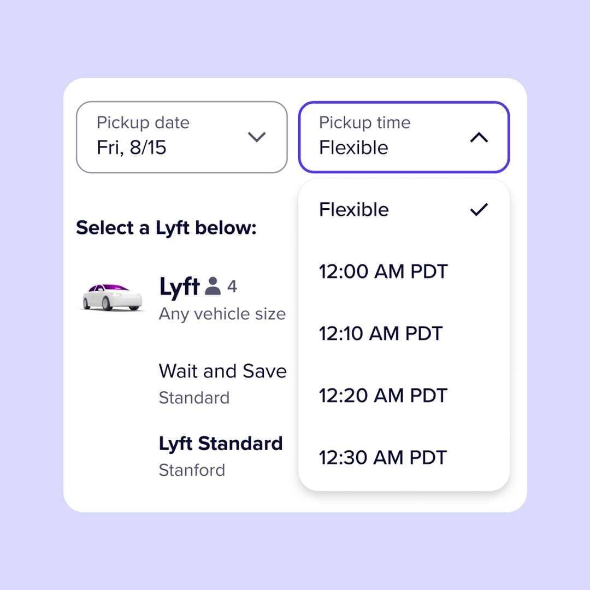
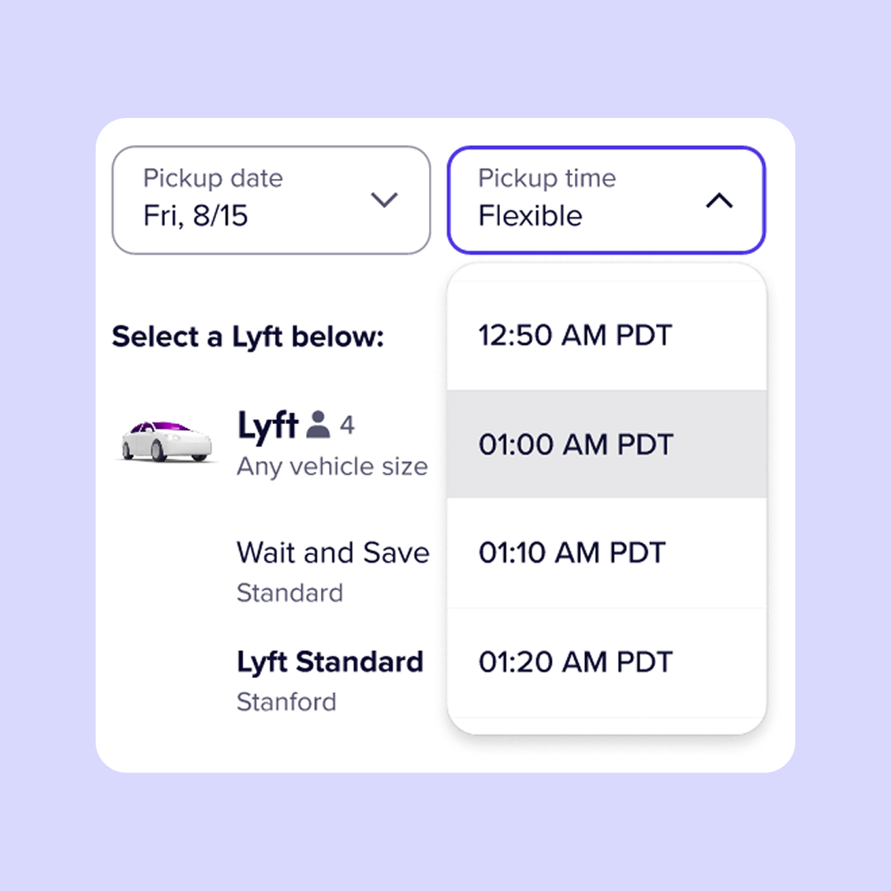
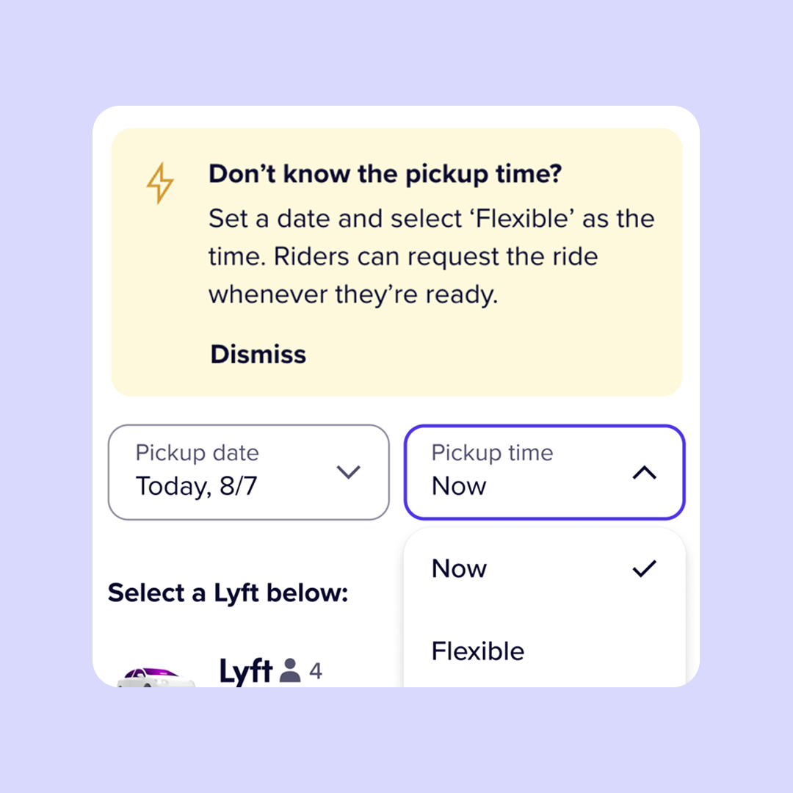
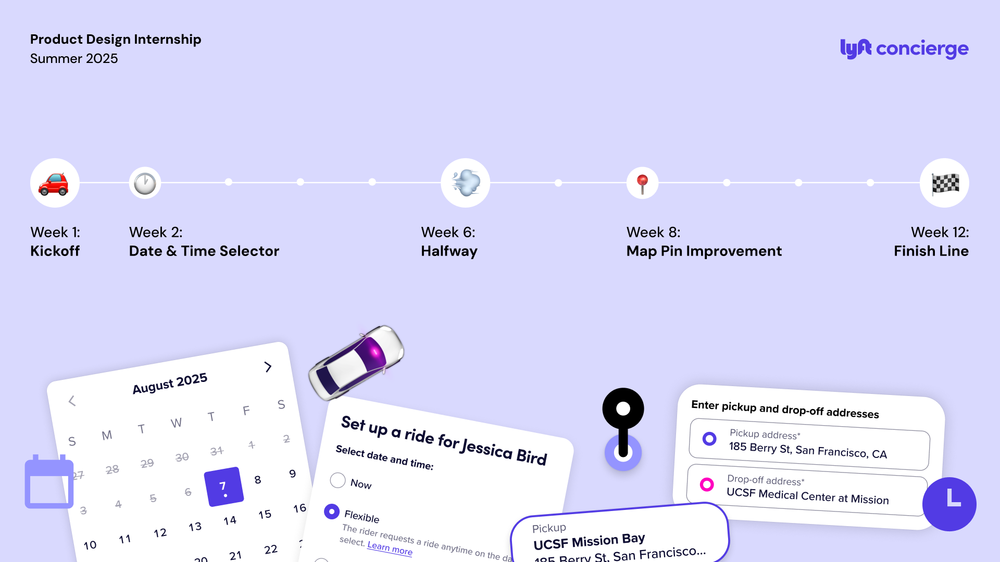

Booking a ride sounds simple — until you're doing it on behalf of someone else, for a specific appointment window, for a rider who may not even have a smartphone. Lyft Concierge is built for exactly this: healthcare facilities, automotive organizations, and other companies that coordinate transportation for the people they serve. As a product design intern at Lyft, I spent twelve weeks reducing friction in the Concierge web booking flow, making it faster, clearer, and less prone to error.
Opportunity Space
When transportation is part of the care journey.
Lyft Concierge riders are often older adults, patients, or individuals without access to smartphones, which means they rely on coordinators to book rides on their behalf for appointments. Unlike typical Lyft rides, these trips are often scheduled in advance, tied to strict appointment windows, and may involve riders with limited mobility, health concerns, or heightened anxiety around travel.

The date and time selector on Concierge Web presents a suboptimal user experience.
At the center of that booking flow sits the date and time selector, and it wasn't meeting the demands of the context.

Time-consuming process
Coordinators scroll through 10-minute increments starting at 12:00AM, a tedious experience for someone managing multiple bookings under time pressure.

Susceptibility to error
Moving quickly makes mistakes easy. Selecting 1:00AM vs. 1:00PM is a real risk, and a single slip can mean a misbooked ride and a rider who never gets picked up.

Unclear ride request types
Concierge supports three pickup types, but they're buried in the time selector with little context or visual distinction, making them easy to overlook entirely.
For coordinators managing rides across tight schedules, a suboptimal experience introduces unnecessary cognitive load and room for error. In a workflow where precision directly impacts someone's care, that's a problem worth solving carefully.
My Work
Focusing on the high-impact decisions coordinators make every booking.
My work centered on how coordinators choose timing, understand and select ride options, and specify pickup locations, ensuring these high-impact moments in the flow were clear, flexible, and error-resistant. Specifically, I:

Shipped improvements to every ride booked.
I delivered key product updates that power every web booking to ensure users are met with a more satisfactory experience.
Collaborated across multiple disciplines.
I partnered cross-functionally to bring in feedback and align everyone involved, from problem discovery to implementation.
Ramped up on a complex product space.
I quickly onboarded and immersed into the complexity of Lyft Concierge, to design with empathy for users and product thinking for the business.
A fun and engaging music learning journey through gamification.
From the moment you open the app, learning feels like an adventure. The home screen drops you into your island, where you can jump into a lesson, track your progress, and pick up right where you left off.
Each lesson walks you through the material, checks your understanding, and sends you off with a clear sense of what you've learned and earned, making every session feel rewarding from start to finish.
Hear learnings come to life and climb up the leaderboard.
As you progress through Noteful, you collect band members and unlock the songs they can play. Swap out members, mix and match your lineup, and build a band that feels uniquely yours.
And when you're ready to show it off, the leaderboard is right there, turning your progress into friendly competition with the community.
Different kinds of statistics to keep track of progress.
The profile page brings everything together. See your experience level, track your streak, browse your inventory, and check in on your class if you're part of one.
It's a personal snapshot of how far you've come, and (quietly) it's probably closer to what our client originally had in mind when they asked for a dashboard.
Above marks six design highlights completed for this project. Feel free to reach out at liwndy@gmail.com if you’d like to know more about my work at the NSP!
How can we measure success?
While our scope didn't extend to handoff, we documented our process thoroughly — delivering a prototype, implementation demo, final presentation, and report. I also took it a step further by thinking ahead to post-launch, identifying metrics we could track to measure success over time:
Adoption and reach
Number of new users captured in X weeks within launch.
Consistent learning
More than X% amount of students achieve a month long streak.
Classmate usage rate
Adoption from music teachers to use in their lessons.
And after presenting our final designs, we were glad to receive positive feedback from both the Noteful team and our peers :)

Design is a balancing act.
Dig for the problem!
Our original scope was a dashboard redesign — but had we taken that at face value, we would've built the wrong thing.
Asking "is this actually the root problem?" early on is what led us to a solution that could genuinely serve Noteful's users long-term. It's a question I want to make a habit.
Design should be intentional.
Best solutions come from being intentional, taking the time to think about which features truly matter and which don’t so we don't overcomplicate the experience.
I’ve come to see design as a balancing act: it only works when impact, clarity, and constraints all align.
And... what would I do differently?
Honestly? Build a design system from the start. At the time, I didn't fully understand what a design system was, and looking back at the designs now, the inconsistencies are hard to miss. It's a humbling reminder of how much I've grown since.
After working across multiple projects and building out design systems from the ground up, I now know that consistency is what makes a product feel cohesive, scalable, and trustworthy. Future me would've started there.